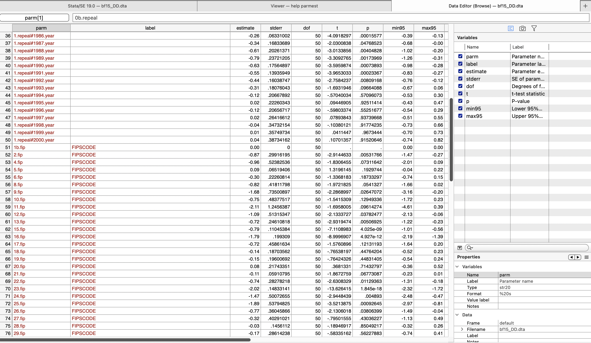
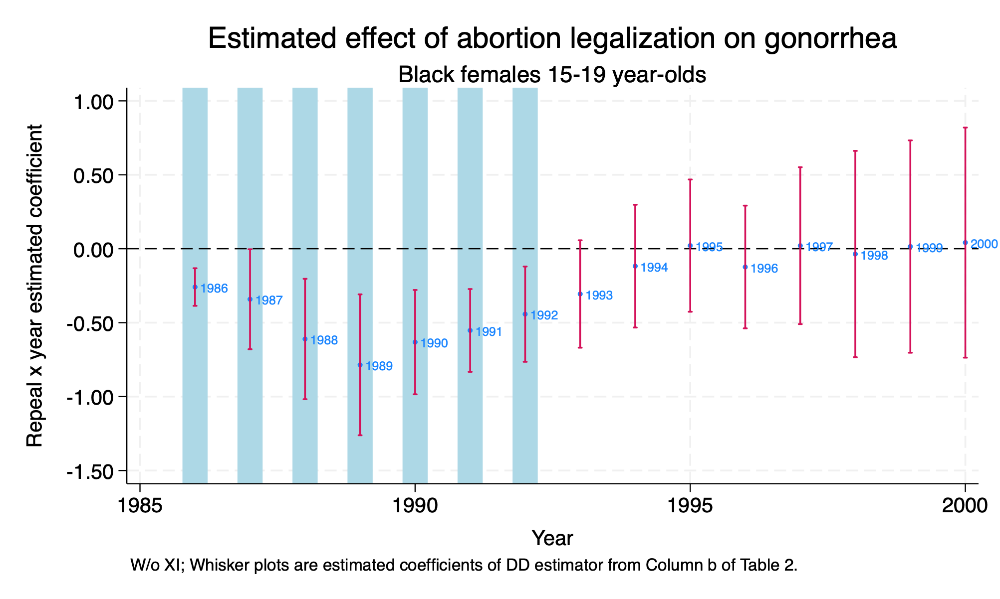

Chapter 1 Difference-in-Differences
1.1 Background
Cunningham and Cornwell (2013) use a difference-in-difference design to test the abortion hypothesis on long-term gonorrhea incidences for 15-19 year olds. Cunningham (2021) makes a good point with good theories provide very specific falsifiable hypotheses. More specific the hypothesis, the more compelling the theory if evidence supports the theory.
The abortion hypothesis from Gruber, Levine, and Staiger (1999) makes very specific predictions about reproductive health and poverty outcomes. If there are far-reaching effects of abortion legalization in the early 1970s, then some of those effects will show up later. Levitt (2004) finds controversial evidence that abortion legalization caused a 10% decline in crime between 1991 an 2001. Cunningham and Cornwell (2013) use a difference-in-difference design as opposed to Donohue and Levitt (2001) that use lagged ratio values at the state level.
The authors’ focus on long-term gonorrhea cases is due to the correlation between single-parent status and risky behaviors. The authors focus on 15-19 year olds, since they would have been treated in the 5 early adopter states before complete legalization.
Five states legalized abortion and then all states are exposed to legalized abortion. There is a three-year lag between the five states and Roe v Wade decision, which should lead to a nonlinear parabolic treatment effect.
There should be increasingly negative effect of abortion legalization on the outcome between the treatment states and control states, and then the difference should disappear after the other states are impacted by Roe v. Wade.
Our repeal states are Alaska (02), California (06), Hawaii (15), New York (36), Washington (53).
1.2 Estimator
We will use the difference-in-differences estimator. Cunningham and Cornwell (2013) model is the following:
\[ Y_{st} = \alpha + \beta_1 RepealST_s + \beta_2 Year_t + \delta (RepealST*Year)_{st}+\psi X_{st}+\gamma ST_s+ \varepsilon_{st} \] Where
- \(Y_{st}\) is outcome of interest: new gonorrhea cases for 15-19 year olds per 100,000
- \(\delta\) is our parameter of interest.
- \(RepealST_s\) is a binary for treatment state
- \(Year_t\) is a time binary for each year
- \(RepealST*Year_{st}\) is our interaction term
- \(X_{st}\) are a set of covariates, such as alcholo consumption per capita, real income per capita, etc.
- \(ST_s\) are state fixed effects
Our parameter of interest is \(\delta\), which is our difference-in-differences estimator.
1.3 Parameter Estimates
We will estimate the \(ATET\) with the difference-in-differences estimator. We will use the ## operator for the interaction between treatment state and year. We will use analytical weights to account for population. We will cluster our standard errors by FIPS code (state).
use "/Users/Sam/Desktop/Econ 672/Data/abortion.dta", clear
reg lnr i.repeal##i.year i.fip acc ir pi alcohol crack poverty income ur if bf15==1 [aweight=totpop], cluster(fip)(sum of wgt is 43,100,087)
note: 53.fip omitted because of collinearity.
Linear regression Number of obs = 736
F(26, 50) = .
Prob > F = .
R-squared = 0.8566
Root MSE = .24363
(Std. err. adjusted for 51 clusters in fip)
------------------------------------------------------------------------------
| Robust
lnr | Coefficient std. err. t P>|t| [95% conf. interval]
-------------+----------------------------------------------------------------
1.repeal | -.9638237 .3925204 -2.46 0.018 -1.752224 -.1754232
|
year |
1986 | -.0208274 .0576675 -0.36 0.719 -.136656 .0950013
1987 | -.2864665 .1109824 -2.58 0.013 -.5093812 -.0635518
1988 | -.3494648 .1309365 -2.67 0.010 -.6124586 -.0864711
1989 | -.40722 .1732298 -2.35 0.023 -.7551622 -.0592778
1990 | -.4864117 .2166425 -2.25 0.029 -.9215509 -.0512725
1991 | -.5353034 .2230406 -2.40 0.020 -.9832937 -.0873131
1992 | -.7866236 .2685517 -2.93 0.005 -1.326025 -.2472217
1993 | -.9767166 .2867949 -3.41 0.001 -1.552761 -.4006721
1994 | -1.064367 .3225681 -3.30 0.002 -1.712264 -.4164694
1995 | -1.356245 .3752309 -3.61 0.001 -2.109918 -.6025717
1996 | -1.520062 .4142987 -3.67 0.001 -2.352206 -.6879188
1997 | -1.571846 .467604 -3.36 0.001 -2.511056 -.6326358
1998 | -1.545129 .5354385 -2.89 0.006 -2.620589 -.4696694
1999 | -1.587414 .5783181 -2.74 0.008 -2.749 -.4258275
2000 | -1.672572 .6572878 -2.54 0.014 -2.992773 -.3523703
|
repeal#year |
1 1986 | -.2590538 .06331 -4.09 0.000 -.3862157 -.1318919
1 1987 | -.341738 .1683369 -2.03 0.048 -.6798526 -.0036234
1 1988 | -.6105532 .2026137 -3.01 0.004 -1.017515 -.2035916
1 1989 | -.7850003 .2372121 -3.31 0.002 -1.261455 -.3085458
1 1990 | -.6316315 .175649 -3.60 0.001 -.9844328 -.2788301
1 1991 | -.5526026 .1393595 -3.97 0.000 -.8325144 -.2726909
1 1992 | -.4424166 .1603875 -2.76 0.008 -.7645643 -.1202689
1 1993 | -.3060626 .1807604 -1.69 0.097 -.6691306 .0570054
1 1994 | -.1178897 .2066789 -0.57 0.571 -.5330165 .2972371
1 1995 | .0210291 .2226034 0.09 0.925 -.426083 .4681413
1 1996 | -.1235341 .2065672 -0.60 0.553 -.5384365 .2913682
1 1997 | .0208529 .2641661 0.08 0.937 -.5097404 .5514461
1 1998 | -.0360524 .3473215 -0.10 0.918 -.7336682 .6615635
1 1999 | .0147091 .3574973 0.04 0.967 -.7033454 .7327637
1 2000 | .0414508 .3873416 0.11 0.915 -.7365477 .8194494
|
fip |
2 | -.8718965 .2991619 -2.91 0.005 -1.472781 -.2710121
4 | -.9589386 .5238254 -1.83 0.073 -2.011073 .0931956
5 | .086031 .0651941 1.32 0.193 -.0449151 .2169772
6 | -.2975866 .2226081 -1.34 0.187 -.7447082 .149535
8 | -.824605 .418118 -1.97 0.054 -1.66442 .0152097
9 | -1.680892 .735009 -2.29 0.026 -3.157201 -.2045828
10 | -.7457544 .4837752 -1.54 0.129 -1.717445 .2259366
11 | -2.112355 1.245639 -1.70 0.096 -4.614294 .3895843
12 | -1.094748 .5131535 -2.13 0.038 -2.125447 -.0640485
13 | -.7215762 .2461082 -2.93 0.005 -1.215899 -.2272534
15 | -.785426 .1104538 -7.11 0.000 -1.007279 -.563573
16 | -1.793719 .199309 -9.00 0.000 -2.194043 -1.393395
17 | -.7228205 .4586163 -1.58 0.121 -1.643979 .1983376
18 | -.1431537 .1870356 -0.77 0.448 -.5188258 .2325184
19 | -.149797 .1960069 -0.76 0.448 -.5434884 .2438945
20 | .0800445 .2174335 0.37 0.714 -.3566836 .5167725
21 | -.1103709 .0591079 -1.87 0.068 -.2290927 .008351
22 | -.7439527 .2827822 -2.63 0.011 -1.311937 -.1759679
23 | -2.021225 .1483314 -13.63 0.000 -2.319158 -1.723293
24 | -1.474562 .5007266 -2.94 0.005 -2.4803 -.4688227
25 | -1.894324 .5379483 -3.52 0.001 -2.974825 -.8138234
26 | -.7679939 .3604587 -2.13 0.038 -1.491996 -.0439913
27 | -.3203199 .4029102 -0.80 0.430 -1.129589 .4889491
28 | -.0275888 .1456112 -0.19 0.850 -.3200575 .2648799
29 | -.1669216 .2861424 -0.58 0.562 -.7416555 .4078123
30 | -1.266169 .1883256 -6.72 0.000 -1.644432 -.8879054
31 | -.1175657 .3082755 -0.38 0.705 -.7367553 .501624
32 | -1.964808 1.044429 -1.88 0.066 -4.062606 .1329889
33 | -3.590973 .8735464 -4.11 0.000 -5.345543 -1.836404
34 | -2.275554 .6451338 -3.53 0.001 -3.571343 -.9797646
35 | -1.181403 .3453042 -3.42 0.001 -1.874967 -.4878395
36 | -1.383549 .1679959 -8.24 0.000 -1.720978 -1.046119
37 | -.0884957 .1283493 -0.69 0.494 -.3462929 .1693014
38 | -1.826491 .1347731 -13.55 0.000 -2.09719 -1.555791
39 | -.4892242 .2468848 -1.98 0.053 -.9851069 .0066586
40 | .3048617 .0728499 4.18 0.000 .1585383 .4511851
41 | -1.122812 .3450629 -3.25 0.002 -1.815891 -.4297331
42 | -.6310678 .3294935 -1.92 0.061 -1.292875 .0307394
44 | -1.209623 .5218193 -2.32 0.025 -2.257728 -.1615186
45 | -1.1109 .18893 -5.88 0.000 -1.490377 -.7314228
46 | -2.028952 .701715 -2.89 0.006 -3.438388 -.6195157
47 | .0592482 .1032237 0.57 0.569 -.1480827 .2665792
48 | -.6054829 .327232 -1.85 0.070 -1.262748 .0517819
49 | -1.266724 .206377 -6.14 0.000 -1.681244 -.8522034
50 | -1.997358 .2201325 -9.07 0.000 -2.439507 -1.555209
51 | -.9493606 .3246087 -2.92 0.005 -1.601356 -.2973647
53 | 0 (omitted)
54 | -.5213726 .1272785 -4.10 0.000 -.777019 -.2657262
55 | -.4836776 .5516487 -0.88 0.385 -1.591697 .6243413
56 | -2.192106 .5827897 -3.76 0.000 -3.362674 -1.021539
|
acc | .0028777 .0012798 2.25 0.029 .0003071 .0054484
ir | .0004439 .0004202 1.06 0.296 -.0004002 .001288
pi | -.0390221 .0662197 -0.59 0.558 -.1720282 .0939841
alcohol | .4468421 .3277729 1.36 0.179 -.211509 1.105193
crack | .0528287 .0346135 1.53 0.133 -.0166946 .1223521
poverty | -.002761 .0140407 -0.20 0.845 -.0309626 .0254406
income | .0000585 .0000443 1.32 0.193 -.0000304 .0001474
ur | -.0278237 .0364834 -0.76 0.449 -.1011027 .0454553
_cons | 7.475343 1.17536 6.36 0.000 5.114563 9.836123
------------------------------------------------------------------------------We can see that the difference-in-differnces interaction is statistically significant from 1986 to 1992. After 1992, we fail to reject the null hypothesis.
1.4 Graph
We can save our parameter estimates using the parmest command, so that we can graph our difference-in-differences output.
parmest, label for(estimate min95 max95 %8.2f) li(parm label estimate min95 max95) saving(bf15_DD.dta, replace)Now we need to bring the data into Stata and work with the years. First, use the Parameter estimates data frame. The data set looks like the following:

We will keep the difference-in-difference parameters, which are row 36 through row 50 observations.
Next, we will generate a year variable for each year of the parameter estimates, and then we will sort the data.
*Generate year
gen year=.
replace year=1986 in 1
replace year=1987 in 2
replace year=1988 in 3
replace year=1989 in 4
replace year=1990 in 5
replace year=1991 in 6
replace year=1992 in 7
replace year=1993 in 8
replace year=1994 in 9
replace year=1995 in 10
replace year=1996 in 11
replace year=1997 in 12
replace year=1998 in 13
replace year=1999 in 14
replace year=2000 in 15
sort yearNow we will graph our parameters using a twoway graph
twoway (scatter estimate year, mlabel(year) mlabsize(vsmall) msize(tiny)) ///
(rcap min95 max95 year, msize(vsmall)), ytitle(Repeal x year estimated coefficient) ///
yscale(titlegap(2)) yline(0, lwidth(thin) lcolor(black)) xtitle(Year) ///
xline(1986 1987 1988 1989 1990 1991 1992, lwidth(vvvthick) ///
lpattern(solid) lcolor(ltblue)) xscale(titlegap(2)) ///
title(Estimated effect of abortion legalization on gonorrhea) ///
subtitle(Black females 15-19 year-olds) ///
note(W/o XI; Whisker plots are estimated coefficients of DD estimator from Column b of Table 2.) ///
legend(off)